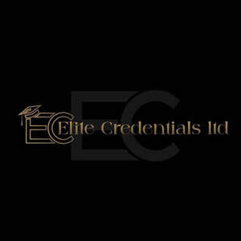

Trade Mark Journal No.2025/048 28 November 2025
UK00004294570 13 November 2025 (35)

- Class 35
- Employment recruiting consultancy; Employment recruiting services; Executive recruiting services; Employment recruiting consultation; Staff recruitment; Personnel recruitment; Interviewing services [for personnel recruitment]; Personnel recruitment advertising; Recruitment advertising; Recruiting of office support staff; Employment recruitment; Personnel recruitment consultancy; Personnel placement and recruitment; Recruitment services; Recruitment of political operatives; Staff recruitment services; Recruitment of executive staff; Personnel recruitment services; Permanent staff recruitment; Recruitment of temporary personnel; Recruitment of high-level management personnel; Executive recruitment services; Recruitment services for sales and marketing personnel; Recruitment of airline personnel; Consultancy relating to personnel recruitment; Business recruitment consultancy; Staff recruitment consultancy services; Recruitment consultants in the financial services field; Recruitment of flight personnel; Recruitment and placement services; Recruitment of computer staff; Personnel recruitment agency services; Recruitment and personnel management services; Recruitment consultancy services; Advertising services relating to the recruitment of personnel; Arranging and conducting recruitment fairs; Professional recruitment services; Personnel recruitment services and employment agencies; Assistance relating to recruitment and placement of staff; Advisory services relating to personnel recruitment; Recruitment of airport ground staff; Office support staff recruitment services; Providing information relating to personnel recruitment; Consultancy and advisory services relating to personnel recruitment; Management advice relating to the recruitment of staff; Providing information relating to employment recruitment; Human resources management and recruitment services; Provision of advice relating to the recruitment of graduates; Personality testing for recruitment purposes; Job and personnel placement; Headhunting services; Hiring of advertising materials; Providing recruitment information via a global computer network; Developing promotional campaigns for business; Personnel management and employment consultancy; Organising and conducting job fairs; Providing marketing consulting in the field of social media; Job placement consultancy; Developing promotional campaigns for businesses; Job agency services for medical personnel; Business organisation and management consultancy in the field of personnel management; Business management consultancy in the field of executive and leadership development; Hiring of office equipment.
Elite Credentials Ltd